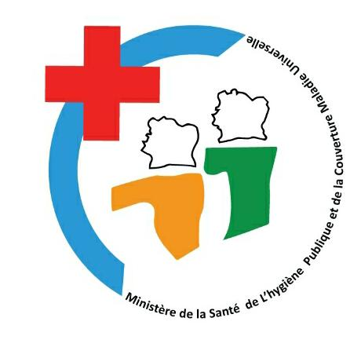

Signalez, suivez et anticipez la propagation des maladies dans votre commune. Une plateforme commune pour les citoyens, les centres de sante et les autorites sanitaires.
Trois espaces distincts selon votre profil
Signalez des symptomes dans votre quartier via un formulaire simple. Recevez des alertes pour votre commune.
Creer un compteEnregistrez et gerez les cas detectes. Suivez l'evolution des signalements dans votre zone de couverture.
Acceder au tableau de bord
Validez les cas, analysez les donnees par commune et declenchez des alertes officielles a destination de la population.
Espace autoritesUn flux simple du signalement a l'alerte
Un citoyen ou un centre de sante soumet un cas avec les symptomes, la maladie suspectee et la commune concernee.
Les autorites sanitaires examinent et valident les donnees avant toute diffusion officielle.
Si le seuil d'alerte est atteint, une notification est envoyee automatiquement via SMS ou WhatsApp.
La carte interactive est mise a jour en temps reel avec le code couleur de risque par commune.
Chargement des alertes...
Votre signalement peut contribuer a proteger votre commune. Le formulaire prend moins de 2 minutes.
Faire un signalement